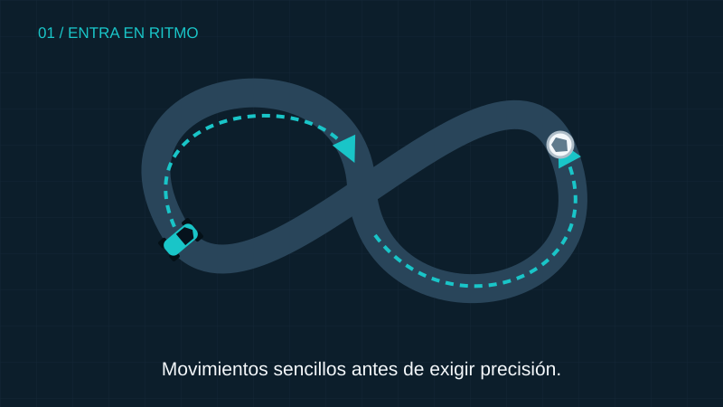
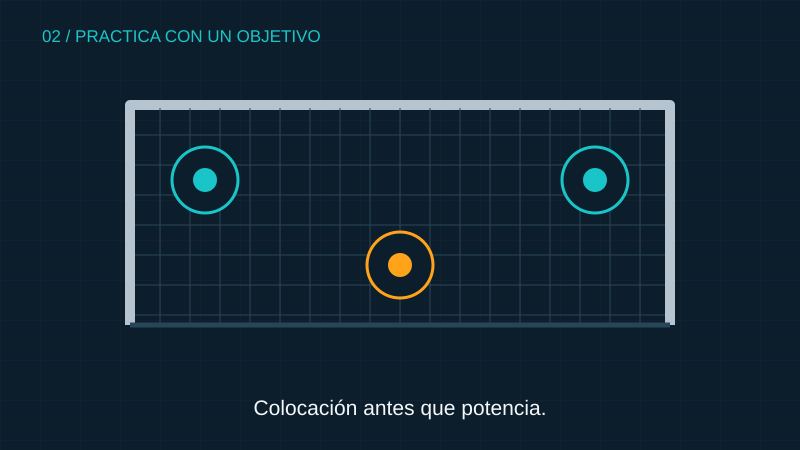
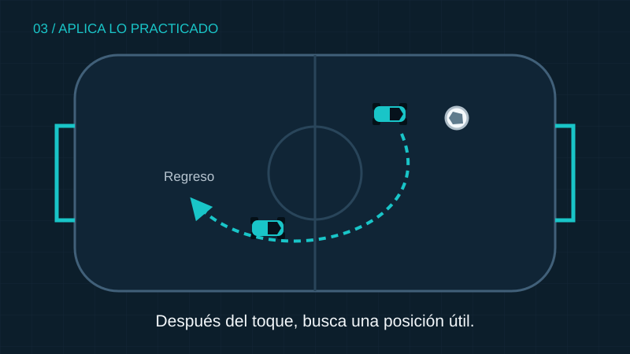

PASO 1
Calentamiento
El juego libre permite comenzar con movimientos sencillos y familiarizarse con el control del auto. El objetivo es entrar en ritmo antes de aumentar la dificultad.
Una rutina breve y clara facilita concentrarse en lo que quieres practicar.

El juego libre permite comenzar con movimientos sencillos y familiarizarse con el control del auto. El objetivo es entrar en ritmo antes de aumentar la dificultad.

Elegir una sola habilidad facilita reconocer los errores durante la sesión. Por ejemplo, se pueden repetir tiros a una zona de la portería y observar la colocación del auto.

Después de practicar, una partida sirve para buscar situaciones similares. La intención es aplicar lo trabajado sin intentar cambiar todas las decisiones al mismo tiempo.
Esta distribución es una propuesta que puedes ajustar según tu tiempo y tu objetivo.